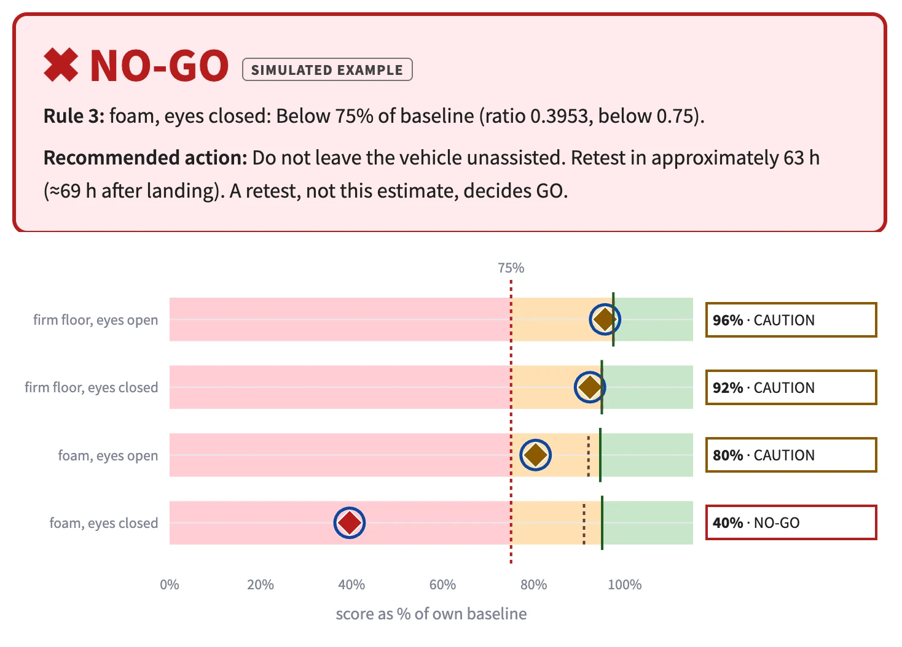
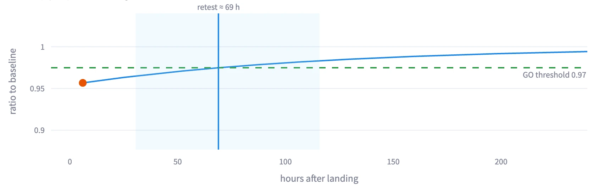

NASA Space Apps Challenge 2026 · Health Monitoring for Astronauts
Can a crew member leave the vehicle safely after landing, and if not, when should balance be retested?
Holy Ship! · NASA Space Apps Singapore · 15 November 2026
Live appvishram0905.github.io/gravity-readiness-app/
Documentationvishram0905.github.io/gravity-readiness-docs/
Prototype for decision support. Not a medical device. No NASA endorsement is implied.
Impact · the problem
13.2
NASA model estimate of the equilibrium score at landing, against 74.9 before flight (eyes closed, sway-referenced support, 37 ISS crew)
20 of 22
eyes-closed trials with prescribed head movements on a sway-referenced support ended in a fall 2–5 h after Space Shuttle landing (11 first-time astronauts)
After an ISS return, a recovery team assists the crew as they leave the vehicle.
On a lunar or Martian surface, the crew and the crew surgeon must judge readiness without that team.
NASA lists the Risk of Altered Sensorimotor/Vestibular Function Impacting Critical Mission Tasks among the risks of human spaceflight.
Wood et al. 2015, Table III p. A49 · Jain et al. 2010, pp. 627–628 · NASA Human Research Roadmap, risks list
Solution · the application
Measure: 3 × 20-s trials in 4 conditions on a force plate, with a spotter or harness; familiarised baseline.
Decide: equilibrium score as a share of baseline; seven numbered rules.
Forecast: after a valid test without a fall, the time to reach GO.
Do not leave unassisted; retest at the estimated time.
Retest later, or referral to the crew surgeon.
Two GO sessions; the crew surgeon decides egress.
Fall, invalid test or unreachable GO: crew surgeon.

Live app: vishram0905.github.io/gravity-readiness-app · Baselines: HBEDB, 163 adults (Santos and Duarte 2016, PhysioNet)
Creativity · what this project adds
Established in NASA work
Added by this project
Compare each crew member with their own normal performance (Jain et al. 2010)
→
Every score expressed as a share of the crew member’s preflight baseline, with population floors
Recovery means a decrement of less than 25% (Jain et al. 2010)
→
Seven numbered rules applied in a fixed order, each result naming its rule; a fall overrides any score
Average crew recovery curves after ISS flights (Wood et al. 2015)
→
Recovery rates anchored on this crew member’s measured deficit: a personal retest time with a range
Repeated testing during recovery
→
Overall GO only after two consecutive GO sessions at least 2 h apart
No dataset labelled with egress outcomes was found in the sources searched (NASA OSDR, PhysioNet, NASA crew publications), so no supervised classifier is trained.
A planned promethazine dose shifts only the retest estimate; its balance effect is an unvalidated transfer. A NASA tilt-test result is shown alongside: 8 of 8 presyncopal after intravenous promethazine, 3 of 8 without.
Jain et al. 2010, p. 630 · Wood et al. 2015, Table III · Shi et al. 2011 · Gandia et al. 2006 (CNES-funded)
Relevance · NASA data at the core
Wood et al. 2015, Table III · 37 ISS crew
→
Retest time and range (curve above, firm floor eyes open) · typical-crew marker · simulated sessions
Sensory Organization Test score, as used by NASA
→
The score of every trial
Jain et al. 2010 · NASA crew posturography
→
Recovery definition behind the 75% NO-GO line
NASA OSDR OSD-569 and OSD-575 · Inspiration4
→
Crew blood panels relative to preflight (context only)
NASA promethazine studies · Shi 2011, Boyd 2009
→
Warnings shown with a planned dose

Deficit vs typical crew
Result
Retest in
Half
NO-GO
≈ 35 h (16–54)
Typical
NO-GO
≈ 63 h (25–110)
1.5 ×
NO-GO
≈ 110 h (32–192)
The average curve alone would give one time for all three.
Non-NASA inputs: HBEDB baselines and floors · Pang et al. 2011 retest allowance · the seven rules and the 2-h confirmation gap are the team’s own
Validity · evidence and limits
Preflight
Reference
NASA crew
Firm, eyes open
94.1
94.3
Firm, eyes closed
92.9
89.9
Foam, eyes open
86.9
87.9
Foam, eyes closed
85.8
74.9
NASA formula, adapted centre-of-mass estimate, ages 25–55 (n = 43). Cohorts and protocols differ.
42.9%
of single tests in the reference group return GO, 56.4% CAUTION, 0.7% NO-GO: a retest is preferred to a false clearance (n = 140)
201
automated tests: every rule against an independent statement of the arithmetic, the retest solver and the app
Reference adults, not astronauts, recorded once; only these three baselines can be selected so far.
Recovery model from return to Earth; unvalidated for the Moon or Mars.
Simulated post-landing sessions; thresholds not validated against egress outcomes.
Learning effect: NASA excluded the first two preflight sessions; familiarisation protocol not yet set.
Landing-day foam tolerability unresolved: abandoned by NASA after one crew’s concern.
Own analysis of the HBEDB (out/VALIDATION.md) · Wood et al. 2015, Table III · Pang et al. 2011
Summary and next steps
Impact: a standing-balance test becomes an explicit egress decision and retest time for the crew surgeon.
NASA data: crew recovery data (Wood et al. 2015) set every recovery-based retest estimate, and NASA posturography (Jain et al. 2010) the recovery definition behind the NO-GO line.
Next: entry of each crew member’s own baseline; a validation study with a stabilised baseline and independent post-landing sessions, comparing predicted GO times with observed scores and egress outcomes; landing-day tolerability; a portable force plate or wearable sensor.
Live appvishram0905.github.io/gravity-readiness-app/
Documentationvishram0905.github.io/gravity-readiness-docs/
AI was used to assist in collecting literature, writing code and refining language. Prototype only. Not a medical device. No NASA endorsement is implied.